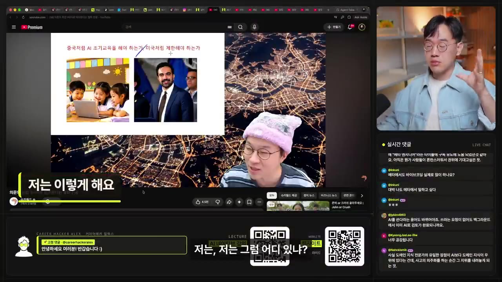

AI가 준 답을 그대로 돌려주는 일은 누구나 할 수 있습니다
▶ 원본 영상 보기한눈에 보기
- 사람이 AI 사이에서 답을 복사·붙여넣기만 하는 "미트 프록시(meat proxy, 인간 라우터)"는 누구나 할 수 있어서 부가가치가 없다는 것이 영상의 주장이다.
- 알렉스의 방법: 리서치·검증·초안은 AI 에이전트를 최대한 돌리고, 나온 보고서는 빈 문서에서 AI와 한 줄씩 다시 써 가며 이해한다.
- 이 과정을 거치면 내용을 95%쯤 이해하게 되고, 그렇게 하지 않는 사람은 의심하게 된다고 말한다.
- 도메인 전문가도 경력만으로는 지위를 지키기 어렵고, AI가 모르는 영역을 파고들며 스스로 검증하고 에고를 내려놓아야 한다.
- 예전 코드는 유지보수하기보다 아이디어만 가져와 처음부터 새로 쓰는 편이 더 빠르다는 것이 알렉스의 의견이다.
이런 분께 도움이 됩니다
- AI를 쓰면서 "일은 하는데 남는 게 없다"고 느끼는 직장인·개발자.
- AI 보고서를 읽어도 머리에 안 들어와 이해하는 방법이 필요한 분.
- 오래된 AI 코드 프로젝트를 유지할지 새로 쓸지 고민하는 분.
핵심 내용
AI 사고 외주화와 미트 프록시
- 실리콘밸리 개발자의 99%는 AI로 코딩·리뷰를 하고, 손으로 코딩하는 사람은 1%도 안 된다는 것이 알렉스의 주장이다. "바이브 코딩은 그냥 코딩"이라고 말한다. (0:32)
- 미트 프록시: 질문을 받은 사람이 자기 AI에 그대로 복붙하고, 답을 다시 복붙해 돌려주는 상태. 받는 쪽도 AI에 복붙해 검토한다. (1:01)
- 알렉스 본인도 겪었다. 정보는 오가는데 체득되는 것이 하나도 없었다고 한다.
- AI 산출물이 너무 많아 사람이 읽을 수준을 넘어선 것도 원인으로 든다.
💡 AI 답을 그대로 전달하는 일은 누구나 할 수 있어서 내가 더하는 가치가 없다.
- 중국은 어린 학생에게 AI를 적극 쓰게 하고, 미국은 교실에서 AI를 빼는 쪽이라고 소개한다. 슈카 님 영상을 인용해 정답은 없고 균형이 중요하다고 말한다. (2:39)

알렉스의 방법: AI 최대 활용 + 빈 문서에서 한 줄씩
🔁 리서치에서 이해까지
- 자료 수집
- 교차 검증
- 제안서 초안
- 양식 정하기
- 빈 문서에서 한 줄씩
- 1자료 수집
에이전트를 100개쯤 돌려 관련 자료를 모두 긁어오게 한다. (3:41)
- 2교차 검증
Claude, GPT 등 여러 모델로 검증해 알짜만 추린다.
- 3제안서 초안
AI에게 "너라면 어떻게 하겠냐"며 proposal을 쓰게 하고 다시 검증한다. (4:09)
- 4양식 정하기
문제 정의(problem statement), 솔루션 제안, 가설·근거, 검증, 마일스톤 등 섹션을 정한다. (4:37)
- 5빈 문서에서 한 줄씩
AI가 한 문단 쓰면 읽고, 마음에 안 드는 것·모르는 것을 모두 물어본다(인터뷰).
'프로포절 양식부터' 슬라이드: 무슨 문제를 푸나·어떻게 풀자는 건가 · ▶ 5:09
- 조사에 10시간, 길게는 하루가 걸리기도 한다. 30장짜리 보고서는 괜찮지만 읽어도 안 들어와서 이 방식을 쓴다.
- 이렇게 다 쓰고 나면 거의 95%까지 이해한다고 한다. 이렇게 하지 않는 사람은 앞으로 의심할 것 같다고 말한다.
- AI가 질문하는 소크라테스 모드("왜 그렇게 생각했니?")도 함께 쓴다고 한다.
💡 AI는 최대한 돌리되, 이해는 빈 문서에서 직접 한 줄씩 쓰며 얻는다.
도메인 전문가의 지위
- AI가 데이터로 갖고 있지 않은 정보(예: 공장 현장 지식)에서는 도메인 전문가가 여전히 매우 중요하다. (8:23)
- 하지만 지식이 데이터로 존재하는 영역이라면 "내가 AI보다 똑똑하다"고 말하기 어렵다는 것이 알렉스의 생각이다.
- 예전엔 30년 차 말을 4년 차보다 믿었지만, AI 때문에 이 인식이 바뀌고 있다고 본다. (9:29)
- 알렉스가 꼽는 경력자의 진짜 가치: 끈기, 리더십, 책임감(accountability). (10:01)
- 잘하는 시니어는 자기 말을 100% 믿으라 하지 않고 직관으로 방향만 잡은 뒤 AI로 다시 검증한다.
- 에고를 내려놓지 않으면 요즘은 취급받지 못한다고 말한다. 젊은 동료를 존중하고 언러닝(unlearning)을 연습한다고 한다.
💡 30년 경력 자체가 아니라 AI가 모르는 것을 더 깊이 아는 것이 전문성을 지킨다.
오래된 AI 코드: 유지보수 vs 새로 쓰기
- 질문: 1년 전 바이브 코딩으로 시작한 프로젝트를 계속 쌓아도 되나, 더 좋은 모델로 갈아엎어야 하나. (11:32)
- 알렉스의 답: 아이디어와 기득 지식만 가져와 처음부터 끝까지 새로 쓸 것이다. 새로 쓰는 데 하루가 안 걸리기 때문이다. (12:36)
- 사례: C++ 등으로 만든 서비스를 Rust로 갈아타는 흐름. 더 빠르고, 토큰이 덜 들고, 컴파일 언어라 더 안정적이라는 이유를 든다. (12:05)
- 개발 실력 늘리는 전통 방식도 "인스타그램을 똑같이 만들어 보기"였고, 시행착오로 DB·API·UI를 배운다.
- 고치면 깨지는 소프트웨어를 유지보수하느니, 시행착오를 거친 뒤 다시 쓰는 편이 빠르다고 본다.
기억할 숫자·인용
- 실리콘밸리에서 손으로 코딩하는 사람 1% 미만, 99%가 AI로 코딩·리뷰 (알렉스 주장)
- 직접 써 보면 이해도 약 95%
- "AI가 준 답을 그대로 돌려주는 일은 누구나 할 수 있다."
- 조사·보고서 작성에 10시간~하루
생각해볼 점
- 99%, 95% 같은 수치는 알렉스 개인의 체감이며 근거 자료는 제시되지 않았다.
- 새로 쓰기가 항상 빠른 것은 아니다. 기존 데이터·운영 중인 서비스·테스트가 얽히면 부담이 다를 수 있다(내 의견).
- 미국 교실에서 AI를 뺀다는 이야기는 일반화된 사실인지 확인이 필요하다.
바로 해볼 일
- 다음에 AI가 보고서를 주면 그대로 전달하지 말고 빈 문서에 문제 정의부터 AI와 한 줄씩 써 보기
- 모르는 문단을 AI에게 "왜 그렇게 생각했니?"라고 인터뷰하듯 질문해 보기
- 오래된 프로젝트 하나의 핵심 아이디어만 정리해 새로 쓰는 데 걸리는 시간을 가늠해 보기